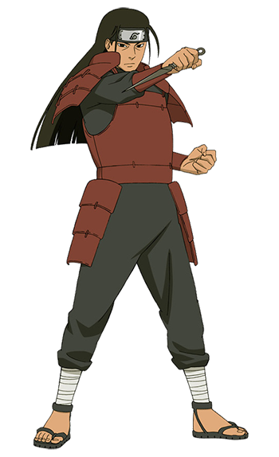

Hasirama Senju
Shondaime Hokage

- Biodata Hasirama senju
- Latar Belakang Hasirama Senju
- Kemampuan Hasirama
- Chakra yang sangat besar: Hashirama memiliki jumlah chakra yang sangat besar, memungkinkan dia untuk melakukan jutsu-jutsu besar tanpa kelelahan.
- Regenerasi: Hashirama memiliki kemampuan regenerasi yang luar biasa, mempercepat proses penyembuhan tanpa perlu jutsu medis.
- Macam-macam Jutsu yang dimiliki hasirama
- Mokuton: Hōbi no Jutsu (Wood Release: Wood Expulsion Jutsu): Menciptakan kayu dari tubuhnya untuk berbagai keperluan, termasuk pertahanan.
- Mokuton: Jukai Kōtan (Wood Release: Nativity of a World of Trees): Menciptakan hutan raksasa secara instan.
- Mokuton: Mokuryū no Jutsu (Wood Release: Wood Dragon Technique): Memanggil naga kayu besar yang dapat digunakan untuk menyerang atau menahan musuh.
- Mokuton: Hotei no Jutsu (Wood Release: Laughing Buddha Technique): Memanggil patung kayu raksasa dengan banyak tangan untuk menyerang atau melindungi.
- Mokuton: Kajukai Kōrin (Wood Release: Advent of a World of Flowering Trees): Menciptakan hutan bunga yang mengeluarkan serbuk tidur yang kuat.
- Senpō: Mokuton: Shin Susenju (Sage Art: Wood Release: True Several Thousand Hands): Memanggil patung kayu raksasa dengan ribuan tangan untuk menghancurkan musuh.
Hashirama Senju (千手柱間, Senju Hashirama) yang bergelar Hokage Pertama(初代火影, Shodaime Hokage) adalah tokoh fiktif dalam serial manga dan anime Naruto. Ia merupakan salah satu pendiri Konohagakure (bersama Madara) ,sebuah desa fiktif kediaman para ninja. Hashirama merupakan kakak Tobirama Senju, Hokage (bayangan api) kedua di Konohagakure, dan juga merupakan kakek Tsunade (Hokage kelima Konohagakure) dan Nawaki. Diceritakan bahwa Hashirama dihormati sebagai ninja yang paling ditakuti pada masanya. Ia amat dihormati dan bahkan saingannya sendiri, Madara Uchiha, menghormati kekuatannya. Hanya ada satu orang yang mampu menghadapinya, dan hanya ada satu klan yang mampu menghadapi klannya, yaitu Madara Uchiha dan klan Uchiha.
Biodata Hashirama Senju
Nama: Hashirama Senju
Julukan: Dewa Shinobi, Shodai Hokage (Hokage Pertama)
Tanggal Lahir: 23 Oktober
Klan: Klan Senju
Afiliasi: Desa Konoha
Status: Almarhum (pada awal cerita), dihidupkan kembali sementara oleh Edo Tensei
Gender: Laki-laki
Kekkei Genkai: Mokuton (Gaya Kayu)
Hashirama lahir dari Klan Senju, salah satu klan terkuat pada masanya, dan tumbuh dalam periode konflik yang konstan dengan Klan Uchiha. Dia memiliki adik bernama Tobirama Senju, yang nantinya menjadi Hokage Kedua. Hashirama berjuang bersama Uchiha Madara untuk mengakhiri pertikaian antara klan mereka dan mendirikan Desa Konoha sebagai simbol perdamaian. Namun, perbedaan visi mengenai masa depan desa menyebabkan konflik antara mereka, yang berakhir dengan pertempuran besar di Lembah Akhir. Hashirama dikenal karena kekuatannya yang luar biasa, kemampuannya untuk menggunakan Mokuton, dan cita-citanya untuk menciptakan perdamaian di dunia shinobi. Warisannya terus mempengaruhi generasi shinobi yang mengikuti, terutama melalui kebijakan dan sistem yang ia ciptakan di Desa Konoha.
Mokuton (Wood Release):
dibawah ini adalah gambar Mokuton: Hōbi no Jutsu

dibawah ini adalah gambar Mokuton: Jukai Kōtan

dibawah ini adalah gambar jutsu Mokuton: Mokuryū no Jutsu

Shisekiyōjin (Four Red Yang Formation): Barikade pelindung yang sangat kuat yang membutuhkan empat Kage untuk menciptakan.
Senpō (Sage Art):
dibawah ini adalah gambar sage mode

dibawah ini gambar jutsu Senpō: Mokuton: Shin Susenju

Gokuraku no Jutsu (Infinite Darkness Jutsu): Menghilangkan kemampuan melihat musuh dengan menciptakan kegelapan total.